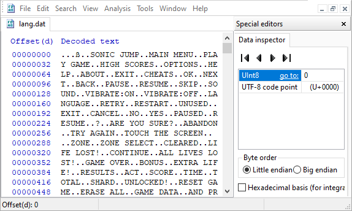
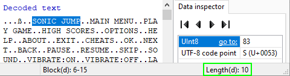
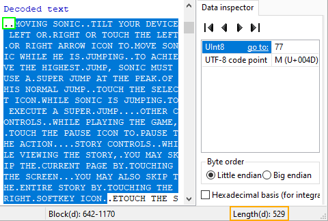

Since the version 2.1.0 release, the language files have been converted from .dat to .json format.
Therefore, this page is now obsolete (except the Task Description section).
This task is simple: Translate the game into different languages. Because the game now features a language setting, we can add more languages in the game!
If you want to help for the translation by adding new languages, you can extract the game's APK file and verify the .dat files located in the res/raw folder.
Here are the available languages in the game:
You can work on other languages of your preferences. However, some languages may only be verified by your own responsibility.
INTRODUCTION:
The language text are written in .dat files located in the res/raw folder. Each .dat file contain a different language.
However, handling those files might be complicated for those who don't understand the logic behind them. Therefore, this section serves as a guide to explain how to handle these files.
First of all, .dat files are meant to be editable via a Hex Editor software tool.
This is a screenshot of the HxD software on PC. The settings has been oversimplified for this guide.
The first thing to understand before modifying the .dat files are a few important information to consider.
First is the UInt8 and UTF-8 code point values located in the Data inspector section, and the length number of selected characters located at the bottom of the window. These information are essential for the text editing.
Next, in the case of HxD, typing on the text doesn't add new characters. Instead, it overwrites the text, like in Insert mode.
To add new characters in the text, you need to copy and paste characters.
.DAT FILE BASIC STRUCTURE:
On the screenshots, you have recognized the text written in English. However, the text are actually in text slots that are seperated by dots or other characters.
But before focusing on the text, you need to understand how the special characters work and how the UInt8 value is counted.
First of all, some special characters are actually 8-bit values. These values are either meant to determines the number of text slots, or the length of a text slot.
You can see the 8-bit value in the UInt8 data of the Data inspector section.
8-bit values mean that you can make a value from 0 to 255. But you can make a value higher than 255 when more than one character is available in a set of characters.
In those .dat files in particular, the 8-bit values starts at the character from the right side of the set.
For example, if you want to make a value of 240, the character hex values needs to be 00 F0. Or you can write 240 for the first character from the right in the UInt8 input.
But if you want to make a value of 260, you need to make the second character from the right equals 1. Whereas the first character, you need to make this value equals 260-256. Therefore, the hex values should be 01 04.
You can't write down 260 in the UInt8 data, due to the 8-bit value limit. Instead, you need to write 1 for the second character from the right, and 4 for the first.
NUMBER OF TEXT SLOTS:
And now, let's dive in the text. But first, let's talk about the first special character.
The first special character is located before the SONIC JUMP text slot. This character is actually one of 4 8-bit values which determine the number of text slots that the game expect to use.
And since a character can have a value up to 255, that means we can make up to 255^4 text slots (4,228,250,625).
In this instance, the .dat file contains a total of 223 text slots. Therefore, this value should be 223.
TEXT SLOT LENGTH:
Next, let's talk about the "dots" separating each text.
Each text slot contain 2 8-bit values before them. They are actually special characters which determine the length of each text slot.
In the case of the SONIC JUMP text slot, the character on the right should has a value of 10, because the text takes 10 characters.

And if you select the whole text in the slot, you can verify the length of the text slot.
In this instance, the length number is 10. Therefore, the 8-bit value before the start of the text slot should be 10.
The length value is really useful in case if you want to add new letters or other characters in the text slot.

If you want to add more than 255 characters in a text slot, you first need to count the length of the text slot.
In this instance, the length number is 529.
Then, you need to calculate the required number for the 8-bit values.
For this instance, being a value of 529 you need calculate 529-(256*2) = 17.
Therefore, the left character should have a value of 2 in UInt8, and the right one a value of 17 in UInt8 (or 02 11 in hexadecimal).
As you can see, 529 has been substracted by 512. This is because 529-256 = 273, which is still a number higher than 256. Therefore, 273 should be substracted by 256 again.
NOTE: In the case of HxD, the length value is written in hexadecimal(h) by default. You can set the value to decimal(d) in the settings.
SPECIFIC DOTS:
Now, you are probably wondering, what the difference between the many dots on the text?
Well, the 8-bit values of each dot serve a purpose for the text. You can either make a line-break or an actual dot on the text.
For the actual dot, you can simply type a "." on the text. Its 8-value in UInt8 equals 46.
Whereas for the line-break, you need to type the 8-bit value of 10 in the UInt8 input. This will display a line-break dot.
ACCENTS AND FOREIGN LANGUAGE CHARACTERS:
Next, let's talk about the accents and foreign language characters like the ones in Japanese or Chinese.
If you type those type of characters in the text, the game won't boot. This is because the game do not read those characters as text. Instead, you need to use the UTF-8 code point input to type those type of characters.
By the way, for some reason, the apostrophes written in the .dat files count has quotes displaying in-game. If you want to make an apostrophe, you need to type or paste it in the UTF-8 code point input.
Keep in mind that doing so makes a set of characters in the text. Meaning that it takes more than one character. Be careful not to overwrite the text.
This setup also works for accents and other characters. Accents take 2 characters in text, whereas other characters like foreign language characters take 3 characters in text.
However, letters like "О́" cannot be included in the UTF-8 code point input, due to being not considered an 8-bit value. Keep this in mind when adding other characters.